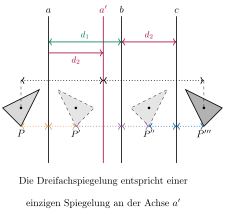
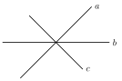

Aufgabe 4.3
Welche Kongruenzabbildung wird durch eine Dreifachspiegelung an Achsen mit keinem oder einem Schnittpunkt erzeugt?
- Untersuchen Sie getrennt: parallele Achsen und Achsen mit gemeinsamem Schnittpunkt
- Nutzen Sie, was Sie über Doppelspiegelungen wissen
- Zerlegen Sie die Dreifachspiegelung in eine Doppelspiegelung plus eine Einzelspiegelung
- Beachten Sie die Reihenfolge der Spiegelungen
Dreifachspiegelung an Achsen ohne oder mit einem Schnittpunkt:
Fall 1: Drei parallele Achsen ($a \parallel b \parallel c$)

Warum ergibt sich eine reine Spiegelung?
Die Doppelspiegelung $\sigma_b \circ \sigma_a$ ergibt eine Verschiebung um $2d_1$. Diese Verschiebung kann selbst als Doppelspiegelung an zwei parallelen Achsen dargestellt werden, wobei eine mit $c$ zusammenfällt. Die beiden Spiegelungen an $c$ heben sich auf, es bleibt eine Spiegelung an der zu $a, b, c$ parallelen Achse $a'$.
Fall 2: Drei Achsen durch einen gemeinsamen Punkt $S$

Analog ergibt sich auch im Falle von einem Schnittpunkt eine reine Spiegelung. Die Geraden $a$ und $b$ erzeugen eine Drehung. Wir ersetzen das Geradenpaar $(a,b)$ durch ein anderes Geradenpaar $(a',b')$, das den gleichen Schnittwinkel und Schnittpunkt hat so, bei dem aber gilt $b'=c$, dadurch heben sich die beiden Spiegelungen an $b'$ und $c$ und es bleibt eine Spiegelung an $a'$, welche aus einer Drehung von $a$ um den Schnittwinkel von $b$ und $c$ entsteht.
(Machen Sie sich das mit einer Skizze nochmals selbst klar!)
Zusammenfassung:
Eine Dreifachspiegelung an drei Achsen, die entweder alle parallel sind oder sich in einem Punkt schneiden, ergibt immer eine einfache Geradenspiegelung:
- Bei parallelen Achsen: Spiegelachse $a'$ ist parallel zu den gegebenen Achsen
- Bei gemeinsamem Schnittpunkt: Spiegelachse $a'$ geht durch diesen Punkt
Dies gilt, weil bei parallelen oder kopunktalen Achsen die enthaltene Doppelspiegelung (Verschiebung bzw.\ Drehung) so umgeformt werden kann, dass sich zwei Spiegelungen aufheben. Nur in diesen beiden Sonderfällen reduziert sich die Dreifachspiegelung auf eine einzige Geradenspiegelung. Liegen dagegen drei echte Schnittpunkte vor (allgemeine Lage), so entsteht eine Schubspiegelung (siehe folgende Aufgabe).
Im Video: Etappe 5 · Drei Spiegelungen, 0 & 1 Schnittpunkte bei 2:06